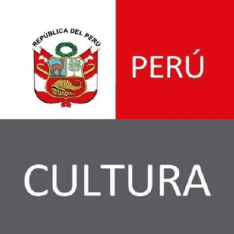
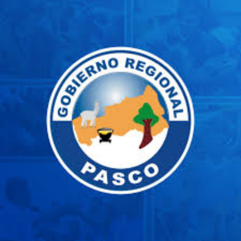
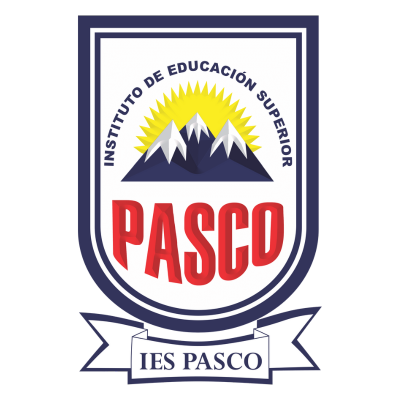

  
Galería de Escritores Pasqueños
MINISTERIO DE CULTURA — PASCO
Mostrar QR
Ordenar: nombre
Ordenar: cantidad de libros
Sala — Libros publicados
Cerrar ✕
Reseña breve
Cerrar
Escanea para ver el sitio: